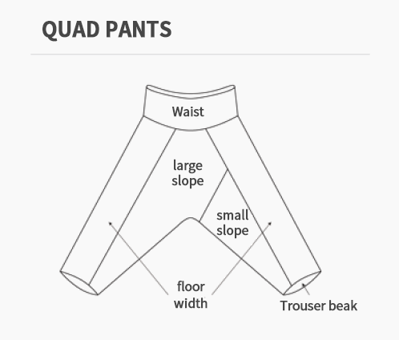

Hanbok regulations
Guidelines for Free Admission for Hanbok Wearers
(Revised 2021.4.lo21. Order No. 20 of the Royal Palace Relics Headquarters of the Cultural Heritage Administration)| Division | Details | |
|---|---|---|
| common |
1. Including free viewing for both traditional hanbok and everyday hanbok 2. Top (jeogori) and bottom (skirt, pants) are basic. However, if you wear only a duruma, it is not recognized as a hanbok and must be worn with top and bottom.
*It is recommended to wear hanbok that matches the dignity of the palace (excessive exposure is prohibited) |
|
| Details | Jeogori | 3. Maintaining the shape of the collar (no relation to pus or knot method) |
| Pants | 4. Trousers that conform to the form of sapphire pants  | |
| Skirt | 5. No restrictions on the form of skirts, skirts, etc. | |
Revised 2021.04.21 Order No. 20 of the Cultural Heritage Administration’s Palace Headquarters
Free admission for Hanbok wearers Q&A
1. What is the range of Hanbok?
Both traditional and everyday hanbok are recognized as hanbok.
2. If there is no pus in the hanjeogori, is it considered hanbok?
Yes, that's right. A collar-style jeogori is recognized as a hanbok jeogori even if it does not have a pus.
3. Is a t-shirt style hanbok jeogori recognized as hanbok?
No. Daily hanbok jackets that are worn like T-shirts are not recognized as hanbok jackets.
4. The closure of the waist of the hanbok pants is in the form of a zipper, and there is no belt at the ankle. Is it a hanbok?
Yes, that's right. In the case of hanbok pants, they are recognized as hanbok if they conform to hanbok pants based on their shape (in the form of four-pocket pants).
5. If I wear only jeans and a jeogori, or a t-shirt under a hanbok, is it recognized as hanbok?
No. It is recognized as Hanbok if it is equipped with a collared jacket and bottoms (skirt, pants).
6. A visitor came wearing a one-piece hanbok without a jacket. Do you recognize it as a hanbok?
No. It is recognized as Hanbok if it is equipped with a collared jacket and bottoms (skirt, pants).
7. A visitor came wearing a jeogori and a waist skirt. Do you recognize this as a hanbok?
Yes, that's right. If you wear a jacket with a collar and a skirt, it is recognized as a hanbok. However, the jeogori must come down to the waist.
8. Is the ramie clothes worn by the elderly in summer also hanbok?
Yes, that's right. Hanbok is accepted if it conforms to the guidelines.
9. If a foreigner wears a hanbok, are they eligible for free admission?
Yes, that's right. Since the purpose of free viewing for those wearing hanbok is the popularization and globalization of hanbok, it is recognized as free viewing regardless of domestic or foreign nationals.